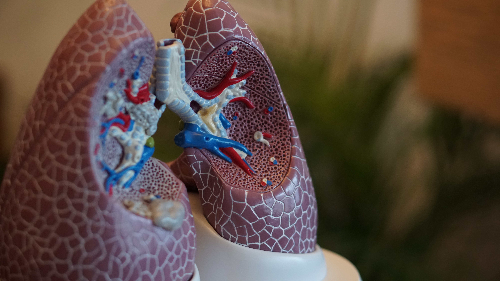

림프관평활근종증은 비정상적인 평활근 세포가 증식함에 따라 나타납니다. 이러한 평활근 세포의 증식은 정상적인 폐의 구조에 있어서 작은 수많은 낭성 변화를 일으키고, 간질이 두꺼워지는 결과를 초래하며, 림프계의 혈관의 변화 및 림프절 비대 등을 발생시킵니다. 대부분의 경우에서 점진적인호흡부전이 발생하고, 천명, 기침, 가래, 객혈 등이 나타날 수 있습니다. 복부 증상에는 림프절병증, 낭포성림프성 종괴, 유미성 복수와 양성종양인 혈관근육지방종 등이 있고, 복강 또는 자궁부속기 종괴 등이 관찰될 수 있습니다. 합병증으로 환자의 약 50%에서 자발성 기흉이 발생할 수 있습니다. 자발성 기흉은 재발이 흔하고, 양측성으로 발생하기도 합니다. 평활근세포들의증식으로 림프관이 파열되면서 유미흉이 발생할 수 있으며 환자에 따라서는 림프액 성분이 복강 내에 축적되는 유미성 복수나 림프액 성분이 소변으로 빠져나오는 유미뇨가 발생할 수 있습니다.
약 50%의 환자에서 신장에 혈관근육지방종(과오종)이 발생하지만, 신장 기능에는 크게 미치지 않는경우가 많습니다. 뇌와 척수를 싸고 있는 수막에 수막종이 발생할 위험이 증가합니다. 림프관평활근종증은 서서히 진행하며 드물게 급성악화과정을 보이기도 하고 진단 후 평균적인 생존기간은 8-10년 정도입니다. [네이버 지식백과] 림프관평활근종증 [Lymphangioleiomyomatosis] (희귀질환정보)